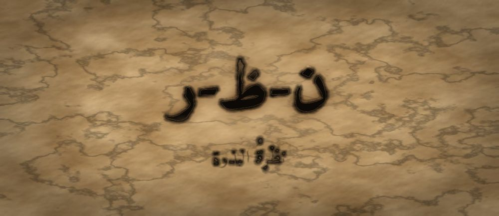

مَطبعةُ جُذور · دبي · MCMXXVI · سِلْسِلَةُ فَنِّ البَيان

مَرحلةُ البَذْرَة · الفئة ٤–٦ · الجذر ن-ظ-ر · حسّان بن ثابت
❦ ✦ ❧
السِّفْرُ ٣ — نظرةُ البذرة
«أَنْظُرُ قَبْلَ أَنْ أَنْطِقَ»

الرِّسَالَةُ الجَوْهَرِيَّة
بَعْدَ النَّفَسِ وَالصَّوْتِ تَأْتِي النَّظْرَةُ. الْكَلَامُ لَا يَبْدَأُ مِنَ الْفَمِ بَلْ مِنَ الْعَيْنِ: أَنْ تَرَى مَنْ أَمَامَكَ قَبْلَ أَنْ تُخَاطِبَهُ. وَالنَّظْرَةُ الْقَصِيرَةُ الصَّادِقَةُ تَقُولُ «أَرَاكَ» أَبْلَغَ مِنْ كَلَامٍ كَثِيرٍ يُقَالُ وَالْعَيْنُ شَارِدَةٌ فِي مَكَانٍ آخَرَ.
بِطَاقَةُ هُوِيَّةِ السِّفْر
| المستوى / الدرجة | بَذْرَة — بَذْرَةٌ تَنْظُرُ (الدرجةُ الثالثةُ في المستوى الأوّل) |
| الفئة العمرية | ٤–٦ سنوات · نطاقُ تداخلٍ يمتدُّ إلى ٧ للمتعلّمِ المتأخّرِ |
| الجذر الأساسي | ن – ظ – ر · النَّظَرُ: أَنْ تَصِلَ الْعَيْنُ قَبْلَ أَنْ يَصِلَ اللِّسَانُ |
| أسرة الجذر | نَظَر · نَظَرَ · أَنْظَار · نَاظِر · مَنْظَر · انْتِظَار |
| المحطّة | النَّظْرَةُ — أوّلُ جسرٍ بينَ الذاتِ والآخرِ |
| المرساة الحسّيّة | نظرةٌ قصيرةٌ إلى لونِ عينِ المُحدَّثِ ثمَّ إلى أنفِهِ — يختارُها الطفلُ بنفسِهِ ويُوقِفُها متى شاءَ |
| الاستعارة | البذرةُ التي صارَ لها صوتٌ، تشقُّ التُّرابَ فترى النورَ لأوّلِ مرّةٍ |
| الشخصيتان الحكيمتان | حسّانُ بنُ ثابتٍ (شاعرٌ يرى المجلسَ قبلَ أنْ يقولَ) + الجَدّةُ رملة |
| الشخصية الرمزيّة | نورُ البذرةِ — تكبرُ من السفرِ الأوّلِ والثاني |
| الشخصية المضادّة | الضَّبَابُ الشَّارِدُ — شخصيّةٌ رمزيّةٌ (لا تاريخيّةٌ) تُمثِّلُ الشُّرودَ، وتتعلّمُ أنْ تَصْفُوَ |
| المهارة (فعل) | أَنْظُرُ — الحلقةُ الثالثةُ في القوسِ التراكميِّ |
| المرجعُ النظريّ | استرشادًا بـ TRT — نظرية القراءة الملموسة · ومجال الوعيِ الذاتيِّ والاجتماعيِّ |
| حدّ اللمس | النظرُ دعوةٌ لا إلزامٌ؛ والطفلُ الذي لا يريحُهُ النظرُ في العينِ ينظرُ إلى الجبينِ أو اليدِ |
صَاحِبُ السِّفْرِ مِنَ التُّرَاث
حسّانُ بنُ ثابتٍ شاعرٌ عربيٌّ من الأنصارِ في المدينةِ، عُرِفَ بأنّهُ شاعرُ النبيِّ ﷺ الذي يُدافِعُ عنهُ بالكلمةِ، وكانَ خبيرًا بمجالسِ العربِ ووقعِ الكلامِ في السامعينَ. نستلهمُ منهُ هنا: أنَّ البليغَ يقرأُ وجوهَ مَن أمامَهُ ويقيسُ حالَهم بعينِهِ قبلَ أنْ يفتحَ فمَهُ.
الشَّخْصِيَّةُ المُضَادَّة — الضَّبَابُ الشَّارِدُ — شخصيّةٌ رمزيّةٌ لا تاريخيّةٌ، يملأُ الحقلَ فيغيبُ كلُّ شيءٍ خلفَهُ، ويظنُّ أنَّ عدمَ الرؤيةِ راحةٌ من التعبِ. لا يُهزَمُ ولا يُشيطَنُ؛ بل يتعلّمُ أنْ يرقَّ ويصفوَ قليلًا، فيكتشفُ أنَّ أجملَ ما فيهِ أنّهُ يستطيعُ أنْ يرى ويُرى.
الجَذْرُ وَأُسْرَتُه
ن-ظ-ر — نَظَر · نَظَرَ · أَنْظَار · نَاظِر · مَنْظَر · انْتِظَار
الجذرُ (ن-ظ-ر) سالمٌ، ومعناهُ يدورُ على تقليبِ البصرِ والتأمّلِ، ومنهُ «المَنْظَر» للمكانِ المرئيِّ و«النّاظِر» للعينِ نفسِها. ويُلاحَظُ للمعلّمِ أنَّ «انْتِظَار» من الجذرِ نفسِهِ: فمن ينتظرُ إنّما يمدُّ نظرَهُ إلى ما هو آتٍ — صلةٌ معنويّةٌ لطيفةٌ تُذكَرُ للمعلّمِ ولا تُثقَلُ بها ذاكرةُ الطفلِ.
القِصَّةُ الكَامِلَة
المشهد ١ — نُورُ تَتَكَلَّمُ وَعَيْنُهَا فِي مَكَانٍ آخَرَ
صَارَ لِنُورَ نَفَسٌ تَشْعُرُ بِهِ، وَصَوْتٌ صَغِيرٌ صَادِقٌ تُحِبُّهُ. فَخَرَجَتْ فِي الصَّبَاحِ إِلَى الْحَقْلِ وَقَالَتْ لِلْفَرَاشَةِ: «صَبَاحُ الْخَيْرِ!» لَكِنَّ عَيْنَهَا كَانَتْ تَنْظُرُ إِلَى الْغَيْمَةِ الْبَعِيدَةِ. فَلَمْ تَقِفِ الْفَرَاشَةُ وَلَمْ تَرُدَّ، بَلْ طَارَتْ. ثُمَّ قَالَتْ لِلْعُصْفُورِ: «صَبَاحُ الْخَيْرِ!» وَعَيْنُهَا فِي الْأَرْضِ. فَلَمْ يَسْمَعْهَا الْعُصْفُورُ، وَذَهَبَ. حَزِنَتْ نُورُ وَقَالَتْ: «صَوْتِي صَحِيحٌ، وَكَلَامِي جَمِيلٌ... فَلِمَاذَا لَا يَقِفُ لِي أَحَدٌ؟» وَجَلَسَتْ حَائِرَةً، لَا تَدْرِي أَنَّ شَيْئًا وَاحِدًا صَغِيرًا كَانَ نَاقِصًا، وَأَنَّهُ لَيْسَ فِي فَمِهَا... بَلْ فِي عَيْنَيْهَا. ثُمَّ جَرَّبَتْ مَرَّةً ثَالِثَةً مَعَ النَّحْلَةِ، وَرَفَعَتْ صَوْتَهَا أَكْثَرَ، وَقَالَتْ كَلَامًا أَطْوَلَ وَأَجْمَلَ... وَعَيْنُهَا فِي طَرَفِ الْحَقْلِ. فَمَرَّتِ النَّحْلَةُ كَأَنَّهَا لَمْ تَسْمَعْ شَيْئًا. فَقَالَتْ نُورُ: «إِذَنِ الْمُشْكِلَةُ لَيْسَتْ فِي أَنَّ صَوْتِي صَغِيرٌ. هُنَاكَ شَيْءٌ آخَرُ نَاقِصٌ، وَأَنَا لَا أَعْرِفُ مَا هُوَ.»
المشهد ٢ — الضَّبَابُ الشَّارِدُ يَمْلَأُ الْحَقْلَ
وَفِي تِلْكَ اللَّحْظَةِ زَحَفَ عَلَى الْحَقْلِ الضَّبَابُ الشَّارِدُ. صَارَ كُلُّ شَيْءٍ أَبْيَضَ بَاهِتًا: لَا تُرَى شَجَرَةٌ وَلَا وَجْهٌ وَلَا لَوْنٌ. وَقَالَ الضَّبَابُ بِصَوْتٍ نَاعِسٍ: «مَا فَائِدَةُ النَّظَرِ يَا نُورُ؟ النَّظَرُ تَعَبٌ. أَنَا لَا أَنْظُرُ إِلَى أَحَدٍ وَلَا أَحَدَ يَنْظُرُ إِلَيَّ، وَأَنَا مُرْتَاحٌ.» فَجَرَّبَتْ نُورُ أَنْ تَقُولَ كَلَامَهَا وَهِيَ لَا تَرَى شَيْئًا، فَشَعَرَتْ أَنَّ كَلَامَهَا يَخْرُجُ وَيَضِيعُ فِي الْبَيَاضِ بِلَا وُصُولٍ. قَالَتْ فِي نَفْسِهَا: «كَلَامِي مِثْلُ رِسَالَةٍ بِلَا عُنْوَانٍ.» وَصَارَتْ تَتَكَلَّمُ أَقَلَّ وَأَقَلَّ، حَتَّى كَادَتْ تَسْكُتُ. وَكَانَ الضَّبَابُ نَفْسُهُ حَزِينًا فِي دَاخِلِهِ، لِأَنَّهُ لَمْ يَرَ وَجْهَ أَحَدٍ مُنْذُ زَمَنٍ طَوِيلٍ. وَاقْتَرَبَتْ نُورُ مِنْهُ وَقَالَتْ: «وَلَكِنِّي أُرِيدُ أَنْ أَرَى وَجْهَ مَنْ أُكَلِّمُهُ.» فَقَالَ الضَّبَابُ: «الْوُجُوهُ مُتْعِبَةٌ. فِيهَا فَرَحٌ وَحُزْنٌ وَأَشْيَاءُ كَثِيرَةٌ، وَمَنْ رَآهَا صَارَ مَسْؤُولًا عَنْهَا.» فَسَكَتَتْ نُورُ وَفَكَّرَتْ طَوِيلًا، ثُمَّ قَالَتْ فِي نَفْسِهَا: «رُبَّمَا هُوَ مُحِقٌّ... وَلَكِنَّ الْوَحْدَةَ أَتْعَبُ.»
المشهد ٣ — حَسَّانُ وَالْجَدَّةُ رَمْلَةُ يُعَلِّمَانِ نُورَ لُغَةَ الْعَيْنِ
جَاءَ إِلَى الْحَقْلِ رَجُلٌ اسْمُهُ حَسَّانُ بْنُ ثَابِتٍ، وَكَانَ شَاعِرًا يَعْرِفُ كَيْفَ يَقَعُ الْكَلَامُ فِي الْقُلُوبِ. وَمَعَهُ الْجَدَّةُ رَمْلَةُ. قَالَ حَسَّانُ: «يَا نُورُ، أَنَا لَا أَقُولُ بَيْتًا وَاحِدًا قَبْلَ أَنْ أَنْظُرَ إِلَى وُجُوهِ مَنْ أَمَامِي. الْعَيْنُ تَذْهَبُ أَوَّلًا، وَالْكَلِمَةُ تَمْشِي خَلْفَهَا.» فَقَالَتِ الْجَدَّةُ رَمْلَةُ: «جَرِّبِي مَعِي يَا نُورُ. سَأَقُولُ لَكِ صَبَاحَ الْخَيْرِ وَعَيْنِي فِي الْأَرْضِ.» فَقَالَتْهَا، فَقَالَتْ نُورُ: «سَمِعْتُهَا... وَلَكِنِّي لَمْ أَشْعُرْ أَنَّهَا لِي.» ثُمَّ قَالَتِ الْجَدَّةُ: «وَالْآنَ انْظُرِي.» وَرَفَعَتْ عَيْنَيْهَا إِلَى عَيْنَيْ نُورَ لَحْظَةً قَصِيرَةً وَقَالَتْ: «صَبَاحُ الْخَيْرِ يَا نُورُ.» فَاهْتَزَّ شَيْءٌ فِي صَدْرِ نُورَ وَقَالَتْ: «هَذِهِ... وَصَلَتْ إِلَيَّ!» ثُمَّ قَالَ حَسَّانُ: «وَاسْمَعِي مِنِّي أَمْرًا: النَّظَرُ لَيْسَ إِلْزَامًا وَلَا امْتِحَانًا. مَنْ تَعِبَتْ عَيْنُهُ فَلْيَنْظُرْ إِلَى الْجَبِينِ أَوِ الْيَدِ، وَتَصِلُ كَلِمَتُهُ كَذَلِكَ.» فَاطْمَأَنَّتْ نُورُ، لِأَنَّهَا كَانَتْ تَخَافُ أَنْ يُطْلَبَ مِنْهَا شَيْءٌ لَا تَقْدِرُ عَلَيْهِ، فَإِذَا بِالْبَابِ وَاسِعٌ وَفِيهِ أَكْثَرُ مِنْ طَرِيقٍ.
المشهد ٤ — نُورُ تُجَرِّبُ النَّظْرَةَ الْقَصِيرَةَ الصَّادِقَةَ
قَالَتِ الْجَدَّةُ رَمْلَةُ: «النَّظْرَةُ لَا تَكُونُ طَوِيلَةً ثَقِيلَةً، وَلَا تَكُونُ هَارِبَةً. انْظُرِي لَحْظَةً قَصِيرَةً تَعْرِفِينَ فِيهَا لَوْنَ الْعَيْنِ، ثُمَّ أَرِيحِي عَيْنَكِ عَلَى الْأَنْفِ أَوِ الْجَبِينِ. وَإِنْ تَعِبْتِ، فَانْظُرِي إِلَى الْيَدِ — وَهَذَا كَافٍ.» جَرَّبَتْ نُورُ. نَظَرَتْ إِلَى عَيْنِ الْجَدَّةِ لَحْظَةً وَقَالَتْ: «لَوْنُهَا كَلَوْنِ التَّمْرِ!» ثُمَّ أَرَاحَتْ عَيْنَهَا. وَقَالَتْ: «صَبَاحُ الْخَيْرِ يَا جَدَّتِي.» فَقَالَتِ الْجَدَّةُ: «الْآنَ وَصَلَتْ كَلِمَتُكِ.» فَرِحَتْ نُورُ فَرَحًا كَبِيرًا وَقَالَتْ: «إِذَنْ عَيْنِي تَتَكَلَّمُ أَيْضًا! هِيَ تَقُولُ: أَرَاكَ.» فَقَالَ حَسَّانُ: «أَحْسَنْتِ. أَنْظُرُ قَبْلَ أَنْ أَنْطِقَ — احْفَظِيهَا.» ثُمَّ جَرَّبَتْ مَعَ الْفَرَاشَةِ الَّتِي طَارَتْ فِي الصَّبَاحِ. الْتَفَتَتْ إِلَيْهَا بِجِذْعِهَا كُلِّهِ، وَنَظَرَتْ لَحْظَةً قَصِيرَةً، ثُمَّ قَالَتْ: «صَبَاحُ الْخَيْرِ.» فَوَقَفَتِ الْفَرَاشَةُ عَلَى وَرَقَةٍ قَرِيبَةٍ وَلَمْ تَطِرْ. فَقَالَتْ نُورُ لِلْجَدَّةِ هَامِسَةً: «وَقَفَتْ! لَمْ أُغَيِّرْ كَلِمَةً وَاحِدَةً، غَيَّرْتُ عَيْنِي فَقَطْ.»
المشهد ٥ — نَظْرَةٌ وَاحِدَةٌ تُصَفِّي الضَّبَابَ
اقْتَرَبَتْ نُورُ مِنَ الضَّبَابِ الشَّارِدِ. لَمْ تَصِحْ فِيهِ وَلَمْ تَدْفَعْهُ. وَقَفَتْ أَمَامَهُ، وَأَخَذَتْ نَفَسًا هَادِئًا كَمَا تَعَلَّمَتْ فِي أَوَّلِ الْأَمْرِ، وَقَالَتْ بِصَوْتِهَا الصَّغِيرِ الصَّادِقِ، وَعَيْنُهَا فِي الْمَكَانِ الَّذِي تَظُنُّ أَنَّ عَيْنَهُ فِيهِ: «أَرَاكَ.» تَحَرَّكَ الضَّبَابُ. قَالَ بِدَهْشَةٍ: «تَرَيْنَنِي؟ أَنَا؟ لَا أَحَدَ يَرَانِي، أَنَا مُجَرَّدُ بَيَاضٍ.» قَالَتْ نُورُ: «أَرَاكَ. وَلَوْ صَفَوْتَ قَلِيلًا، لَرَأَيْتَنِي أَنَا أَيْضًا.» فَرَقَّ الضَّبَابُ قَلِيلًا... ثُمَّ قَلِيلًا... حَتَّى ظَهَرَ الْحَقْلُ الْأَخْضَرُ وَظَهَرَتْ نُورُ. فَقَالَ الضَّبَابُ بِصَوْتٍ مُبْتَسِمٍ: «مَا أَجْمَلَ أَنْ يَرَانِي أَحَدٌ! لَنْ أَخْتَبِئَ كُلَّ يَوْمٍ بَعْدَ الْيَوْمِ.» وَخَرَجَتْ مِنْ بَيْنِ الْبَيَاضِ أَلْوَانٌ كَانَتْ مُخْتَفِيَةً: أَخْضَرُ الْعُشْبِ، وَأَصْفَرُ الزَّهْرِ، وَبُنِّيُّ الشَّجَرِ. وَقَالَ الضَّبَابُ وَهُوَ يَنْظُرُ حَوْلَهُ لِأَوَّلِ مَرَّةٍ: «كُلُّ هَذَا كَانَ خَلْفِي وَأَنَا لَا أَدْرِي!» فَقَالَتْ نُورُ: «وَأَنْتَ أَيْضًا جَمِيلٌ حِينَ تَكُونُ رَقِيقًا هَكَذَا.» فَخَجِلَ الضَّبَابُ، وَصَارَ نَدًى صَغِيرًا عَلَى الْأَوْرَاقِ.
المشهد ٦ — طَقْسُ الْخِتَامِ: نَظْرَةٌ ثُمَّ كَلِمَةٌ
جَلَسَتْ نُورُ وَالْجَدَّةُ رَمْلَةُ وَالضَّبَابُ الرَّقِيقُ فِي آخِرِ النَّهَارِ. قَالَتِ الْجَدَّةُ: «طَقْسُنَا الْيَوْمَ سَهْلٌ: قَبْلَ أَنْ تَقُولَ كَلِمَةً لِأَحَدٍ، انْظُرْ إِلَيْهِ لَحْظَةً قَصِيرَةً، ثُمَّ قُلْ كَلِمَتَكَ. نَظْرَةٌ... ثُمَّ كَلِمَةٌ.» فَقَالَتْ نُورُ: «وَإِنْ كَانَ النَّظَرُ يُتْعِبُنِي أَحْيَانًا؟» قَالَتِ الْجَدَّةُ: «فَانْظُرْ إِلَى جَبِينِهِ أَوْ يَدِهِ. الْمُهِمُّ أَنْ يَعْرِفَ أَنَّكَ مَعَهُ، لَا أَنْ تُتْعِبَ عَيْنَكَ.» وَقَالَ حَسَّانُ وَهُوَ يَقُومُ: «تَذَكَّرِي يَا نُورُ: نَفَسُكِ قَالَ أَنَا هُنَا، وَصَوْتُكِ قَالَ هَذَا أَنَا، وَعَيْنُكِ الْيَوْمَ قَالَتْ: أَرَاكَ أَنْتَ. وَغَدًا سَتَتَعَلَّمِينَ شَيْئًا أَصْعَبَ قَلِيلًا: أَنْ تُنْصِتِي.» وَجَرَّبَتْ نُورُ الطَّقْسَ مَعَ الضَّبَابِ الرَّقِيقِ: نَظَرَتْ إِلَيْهِ لَحْظَةً، ثُمَّ قَالَتْ: «تُصْبِحُ عَلَى خَيْرٍ.» فَقَالَ: «وَأَنْتِ كَذَلِكَ يَا مَنْ رَأَتْنِي.» وَابْتَسَمَتِ الْجَدَّةُ رَمْلَةُ وَقَالَتْ: «هَذَا كُلُّ الدَّرْسِ يَا أَحْبَابِي: كَلِمَةٌ بِلَا نَظْرَةٍ رِسَالَةٌ بِلَا عُنْوَانٍ، وَنَظْرَةٌ قَصِيرَةٌ صَادِقَةٌ تُوصِلُ أَصْغَرَ الْكَلَامِ إِلَى أَبْعَدِ قَلْبٍ.»
النُّسْخَةُ المُخْتَصَرَة
قَالَتْ نُورُ لِلْفَرَاشَةِ: «صَبَاحُ الْخَيْرِ!» وَعَيْنُهَا فِي الْغَيْمَةِ. فَطَارَتِ الْفَرَاشَةُ. وَقَالَتْ لِلْعُصْفُورِ وَعَيْنُهَا فِي الْأَرْضِ، فَذَهَبَ الْعُصْفُورُ. حَزِنَتْ نُورُ. ثُمَّ جَاءَ الضَّبَابُ الشَّارِدُ وَغَطَّى كُلَّ شَيْءٍ وَقَالَ: «النَّظَرُ تَعَبٌ!» قَالَتِ الْجَدَّةُ رَمْلَةُ: «انْظُرِي إِلَيَّ لَحْظَةً قَصِيرَةً، ثُمَّ قُولِي كَلِمَتَكِ.» نَظَرَتْ نُورُ وَقَالَتْ: «صَبَاحُ الْخَيْرِ يَا جَدَّتِي.» فَقَالَتِ الْجَدَّةُ: «الْآنَ وَصَلَتْ!» ثُمَّ وَقَفَتْ نُورُ أَمَامَ الضَّبَابِ وَقَالَتْ: «أَرَاكَ.» فَصَفَا الضَّبَابُ قَلِيلًا، وَظَهَرَ الْحَقْلُ الْأَخْضَرُ، وَقَالَ: «مَا أَجْمَلَ أَنْ يَرَانِي أَحَدٌ!» وَتَعَلَّمَتْ نُورُ: أَنْظُرُ قَبْلَ أَنْ أَنْطِقَ. وَمَنْ تَعِبَتْ عَيْنُهُ نَظَرَ إِلَى الْجَبِينِ، وَهَذَا كَافٍ. وَقَالَ حَسَّانُ بْنُ ثَابِتٍ: «أَنَا لَا أَقُولُ شِعْرًا حَتَّى أَنْظُرَ إِلَى وُجُوهِ مَنْ أَمَامِي. الْعَيْنُ تَذْهَبُ أَوَّلًا وَالْكَلِمَةُ تَمْشِي خَلْفَهَا.» وَجَرَّبَتْ نُورُ مَعَ الْفَرَاشَةِ، فَوَقَفَتِ الْفَرَاشَةُ وَلَمْ تَطِرْ. فَقَالَتْ نُورُ: «لَمْ أُغَيِّرْ كَلِمَةً، غَيَّرْتُ عَيْنِي فَقَطْ!» وَتَعَلَّمَ الضَّبَابُ أَنْ يَصْفُوَ قَلِيلًا كُلَّ يَوْمٍ.
المِرْسَاةُ الحِسِّيَّة
يَلْتَفِتُ الطِّفْلُ بِجِذْعِهِ نَحْوَ مَنْ يُكَلِّمُهُ، ثُمَّ يَنْظُرُ إِلَى عَيْنِهِ لَحْظَةً قَصِيرَةً يَعْرِفُ فِيهَا لَوْنَهَا، ثُمَّ يُرِيحُ عَيْنَهُ عَلَى الْأَنْفِ أَوِ الْجَبِينِ، ثُمَّ يَقُولُ كَلِمَتَهُ. النَّظْرَةُ قَصِيرَةٌ لَا ثَقِيلَةٌ، وَالطِّفْلُ هُوَ الَّذِي يَبْدَؤُهَا وَيُنْهِيهَا مَتَى شَاءَ. وَمَنْ لَا يُرِيحُهُ النَّظَرُ فِي الْعَيْنِ يَنْظُرُ إِلَى الْجَبِينِ أَوِ الْيَدِ، وَهَذَا كَافٍ تَمَامًا.
العَنَاصِرُ الخَمْسَةُ لِلتَّطْبِيق
| المُخرَجُ اللُّغَويُّ | يقولُ الطفلُ: «أَرَاكَ» بعدَ نظرةٍ قصيرةٍ، ثمَّ يُتبِعُها بتحيّتِهِ. جملةٌ واحدةٌ فقط، ولا يُطلَبُ منهُ تكرارُها أمامَ مجموعةٍ. |
| الحركةُ الجسديّةُ | «نظرةٌ ثمَّ كلمةٌ»: يلتفتُ الطفلُ بجذعِهِ نحوَ مُحدَّثِهِ، ينظرُ لحظةً قصيرةً (ثانيةً أو ثانيتينِ) ثمَّ يُريحُ عينَهُ على الأنفِ أو الجبينِ، ثمَّ يتكلَّمُ. |
| الدفءُ العلائقيُّ | لعبةُ «لونُ العينِ»: يقولُ كلُّ واحدٍ لونَ عينِ الآخرِ بعدَ نظرةٍ قصيرةٍ. اللعبةُ اختياريّةٌ تمامًا، ويُقبَلُ الانسحابُ منها بلا تعليقٍ، ولا لمسَ فيها. |
| البديلُ الحسّيُّ | «نافذةُ الورقِ»: يُمسِكُ الطفلُ ورقةً فيها فتحةٌ صغيرةٌ وينظرُ منها إلى وجهِ مُحدَّثِهِ، فيقلُّ الحملُ البصريُّ ويبقى الاتّصالُ. |
| الجسرُ الإنجليزيُّ | «I look before I speak.» — تُقالُ مرّةً واحدةً بعدَ العربيّةِ، والعربيّةُ هي الأصلُ. |
دَلِيلُ الأَهْلِ وَالمُعَلِّم
| قبل الجلسة | أغلِقوا الشاشاتِ وضعوها في صندوقٍ، فالعينُ التي اعتادتِ الشاشةَ تحتاجُ لحظةً لتعودَ إلى الوجوهِ. اجلسوا في ضوءٍ لطيفٍ غيرِ مُبهِرٍ، وأخبِروا الطفلَ أنَّ نظرَهُ اختيارُهُ وأنَّهُ يستطيعُ أنْ يتوقّفَ متى شاءَ. |
| أثناء الجلسة | طبِّقوا القاعدةَ أنتم أوّلًا: انظروا إلى الطفلِ لحظةً ثمَّ تكلَّموا، لينسخَ النموذجَ لا الأمرَ. لا تقولوا «انظرْ في عينِي» ولا تُصحِّحوا مدّةَ نظرِهِ. اسألوهُ سؤالًا واحدًا: «ما لونُ عيني؟» |
| بعد الجلسة | خلالَ اليومِ العبوا لعبةَ «نظرةٌ ثمَّ كلمةٌ» في مواقفَ حقيقيّةٍ: عندَ طلبِ الماءِ، وعندَ شكرِ أحدٍ. سجّلوا في مفكّرةِ الثلّاجةِ عددَ المرّاتِ التي بدأَ فيها الطفلُ النظرةَ من نفسِهِ، بلا مقارنةٍ بأحدٍ. |
مُؤَشِّرَاتُ الرَّصْدِ الوَصْفِيَّة
| ما تُلاحِظُه | ماذا يعني |
|---|---|
| يلتفتُ بجذعِهِ نحوَ من يكلّمُهُ قبلَ أنْ يتكلَّمَ | بدأَ الانتباهُ يأخذُ شكلًا جسديًّا واضحًا. مؤشّرٌ وصفيٌّ للرصدِ يُدوَّنُ بالسياقِ. |
| يذكرُ تفصيلًا رآهُ في وجهِ محدّثِهِ (لونُ عينٍ، نظّارةٌ، ابتسامةٌ) | النظرةُ صارتْ رؤيةً لا مجرَّدَ اتّجاهٍ للرأسِ. |
| يختارُ بديلَ الجبينِ أو اليدِ حينَ يتعبُ، ثمَّ يعودُ | علامةُ وعيٍ ذاتيٍّ ناضجٍ بحدودِهِ الحسّيّةِ؛ تُقرأُ إيجابًا لا نقصًا. |
| يُلاحِظُ على غيرِهِ أنّهُ «لم ينظرْ إليهِ» | بدأَ يربطُ بينَ النظرِ والوصولِ. لا يُتَّخَذُ هذا شرطًا للانتقالِ إلى السفرِ التالي بحالٍ. |
مُفْرَدَاتُ السِّفْر
| الكلمة | المعنى |
|---|---|
| نَظْرَةٌ | أَنْ تَصِلَ عَيْنُكَ إِلَى أَحَدٍ لَحْظَةً |
| عَيْنٌ | نَافِذَةُ وَجْهِكَ الَّتِي تَرَى بِهَا |
| مَنْظَرٌ | الشَّيْءُ الْجَمِيلُ الَّذِي تَرَاهُ أَمَامَكَ |
| انْتِبَاهٌ | أَنْ يَكُونَ عَقْلُكَ فِي الْمَكَانِ الَّذِي فِيهِ جَسَدُكَ |
| ضَبَابٌ | بَيَاضٌ رَقِيقٌ يَمْلَأُ الْهَوَاءَ فَيُخْفِي الْأَشْيَاءَ |
| صَفَا | صَارَ نَظِيفًا وَاضِحًا يُرَى مَا خَلْفَهُ |
الجِسْرُ الإِنْجْلِيزِيّ
| عربي | English |
|---|---|
| نَظْرَة | a look |
| أَرَاكَ | I see you |
| عَيْن | eye |
| انْتِبَاه | attention |
| ضَبَاب | fog |
| وَاضِح | clear |
أَسْئِلَةُ الفَهْم
- لِمَاذَا طَارَتِ الْفَرَاشَةُ وَلَمْ تَقِفْ لِنُورَ فِي أَوَّلِ الْقِصَّةِ؟ (تَذَكُّرٌ)
- لِمَاذَا صَفَا الضَّبَابُ حِينَ قَالَتْ لَهُ نُورُ: «أَرَاكَ»؟ (اسْتِنْتَاجٌ)
- الْتَفِتْ إِلَى مَنْ بِجَانِبِكَ وَانْظُرْ لَحْظَةً: مَا لَوْنُ عَيْنِهِ؟ (سُؤَالٌ حِسِّيٌّ حَرَكِيٌّ)
- مَتَى شَعَرْتَ أَنَّ أَحَدًا يَتَكَلَّمُ مَعَكَ وَهُوَ لَا يَرَاكَ؟ وَكَيْفَ كَانَ شُعُورُكَ؟ (رَبْطٌ شَخْصِيٌّ)
نَشَاطٌ وَوَسَائِط
| نشاطٌ فنّيّ | «نافذتانِ»: يرسمُ الطفلُ عينينِ كبيرتينِ على ورقةٍ، ويرسمُ داخلَ كلِّ عينٍ شيئًا يحبُّ أنْ يراهُ. ثمَّ يقلبُ الورقةَ ويرسمُ ضبابًا أبيضَ، ليرى الفرقَ بينَ نظرةٍ صافيةٍ ونظرةٍ شاردةٍ. |
| نشاطٌ تمثيليّ | «الرسالةُ بلا عنوانٍ»: يقولُ طفلٌ جملةً وعينُهُ في السقفِ، ثمَّ يقولُ الجملةَ نفسَها بعدَ نظرةٍ قصيرةٍ. يسألُ الآخرُ: أيُّ مرّةٍ وصلَتْ إليكَ؟ ثمَّ يتبادلانِ. المشاركةُ اختياريّةٌ ولا تلامسَ فيها. |
جِسْرُ الذَّاكِرَة
إلى الوراءِ — السفرُ الثاني «صوتُ البذرةِ»: صارَ لكَ نَفَسٌ ثمَّ صارَ لكَ صوتٌ يخرجُ منكَ. وهذا السفرُ يُضيفُ الاتّجاهَ: الصوتُ بلا نظرةٍ رسالةٌ بلا عنوانٍ. إلى الأمامِ — السفرُ الرابعُ «إنصاتُ البرعمِ»: «رأيتَ مَن أمامَكَ، وبقيَ أنْ تسمعَهُ حقًّا. في المرّةِ القادمةِ ستتعلَّمُ أنْ تُنصِتَ لا أنْ تنتظرَ دورَكَ في الكلامِ.»
قَائِمَةُ التَّحَقُّق
- الجذرُ (ن-ظ-ر) صحيحٌ صرفيًّا وأسرتُهُ معروضةٌ بدقّةٍ — صفرُ أخطاءٍ صرفيّةٍ.
- النظرُ معروضٌ كدعوةٍ لا إلزامٍ، وبديلُ الجبينِ واليدِ مُثبَتٌ في النصِّ الموجَّهِ للطفلِ نفسِهِ لا في الهامشِ وحدَهُ.
- حدُّ اللمسِ محفوظٌ: لا تُدارُ رأسُ الطفلِ بيدِ أحدٍ، وكلُّ التفاتٍ حركتُهُ هو.
- الشخصيّةُ التراثيّةُ (حسّانُ بنُ ثابتٍ) موثَّقةٌ بهامشٍ صحيحٍ تاريخيًّا، والضبابُ موسومٌ كرمزيٍّ لا تاريخيٍّ، وهو يتحوّلُ ولا يُشيطَنُ.
- الاسمُ المستعمَلُ للنَّظَريّةِ هو TRT — نَظَرِيَّةُ القراءةِ الملموسةِ، ولا ادّعاءَ اعتمادٍ لأيِّ إطارٍ دوليٍّ (استرشادًا لا اعتمادًا).
- مؤشّراتُ الرصدِ وصفيّةٌ لا بوّاباتٍ، ولا مسابقاتٍ تنافسيّةً، والتشكيلُ مدقّقٌ على القصّةِ والطقوسِ والحوارِ كلِّها.

مَطبعةُ جُذور · دبي · MCMXXVI · صمّمه وطوّره د. عادل ف. عامر
Designed and developed by Dr. Adel F. Amer · Amer (2024) · CC BY-NC-SA 4.0
↤ عودةٌ إلى خِزانةِ الأسفار